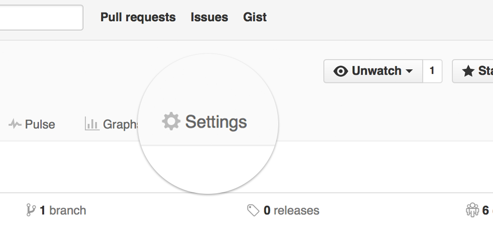
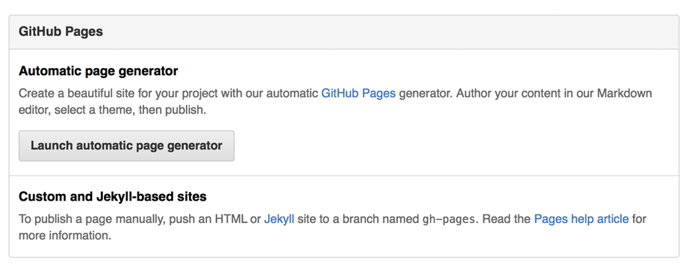
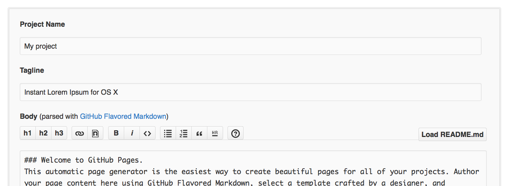

A
A
Serif
Sans
White
Sepia
Night
Star (
-
)
Watch (
-
)
歡迎來到 JavaScript 軟體實戰班！
About the author
Questions and Issues
Edit and Contribute
Introduction
1.
個人網站
1.1.
前置作業
1.2.
個人網頁
1.3.
自訂外觀
1.4.
嵌入圖片
1.5.
附錄 - 如何創造專案網頁
1.5.1.
絕對路徑 & 相對路徑
1.5.2.
create project page on github
2.
認識介面 (UI, User Interface)
2.1.
Framework
2.2.
Bootstrap Grid System
2.3.
Navbar
2.4.
為你的網站加上 favicon
Generated using GitBook
附錄 - 如何創造專案網頁
使用 Github Page 建立網頁
還記得上次我們用 Github 作為網頁空間，儲存我們的程式專案嗎？
點擊專案頁面的 “setting” 按鈕 
點下 “Launch automatic page generator” 按鈕 
先不做修改，直接點選 “Continue to Layouts” 
選擇版型後，點選 “Publish” 按鈕
接著你就會看到你的網頁出現在
http://<帳號名稱>.github.io/<repo名稱>
了